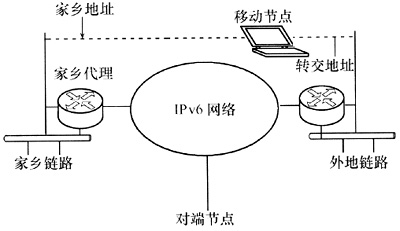

移动IPv6技术在3G移动通信系统中的应用前景
3G移动通信系统将是一个能综合实时业务、非实时业务、宽带业务、窄带业务的网络，能够满足多媒体和视频业务发展的需求。同时，业务承载网应提高安全性并能够提供服务质量保证。因此，3G移动通信系统应同时拥有Internet和电信网的一系列特性。目前，移动设备越来越多，这些设备同时也提出了连接Internet的需求。IPv6不但有足够多的地址分配给这些移动设备。而且利用IPv6的地址自动配置、地址体系结构能使移动通信变得更加简单。同时，移动用户在跨网络随意移动和漫游过程中使用基于TCP/IP的网络时，并不希望随时手动或自动修改移动设备的IP地址，而是希望继续使用原有的IP地址，并享有原网络中的一切权限和服务。因此，移动IPv6技术成为IPv6协议不可分割的一部分，特别是在未来3G网络的建设中，移动IPv6技术将成为移动运营商必须做出选择的一项重要技术。
1、移动IPv6技术简介
1996年IETF公布了第一个移动IPv6草案，到2004年初IPv6主机移动协议草案已经发展到了第24号版本，并于2004年6月发布的RFC3775成为第一个移动IPv6标准。移动IPv6利用IPv6自动配置、优化的报头和扩展选项，简化了主机移动协议的设计，解决了移动IPv4入口过滤、三角路由等问题，并降低了网络开销，提高了工作性能。
（1）移动IPv6的组成
图1 显示出了移动IPv6的各个组成部分。

http://hiphotos.baidu.com/hxzon/pic/item/c9a27df48e31bb98f3d385a9.jpg
图1 移动IPv6的组成
移动IPv6与移动IPv4一样，同样存在家乡链路（HomeLink）和外地链路（ForeignLink）。家乡链路就是具有本地子网前缀的链路，移动节点使用本地子网前缀创建家乡地址（HomeAddress）。外地链路就是非移动节点家乡链路的链路，外地链路具有外地子网前缀，移动节点使用外地子网前缀创建转交地址（Care-of Address）。移动IPv6的家乡地址就是移动节点在家乡链路时所获得的地址，无论移动节点位于IPv6互联网中的哪个位置，移动节点的家乡地址总是可到达的。移动IPv6的转交地址是移动节点位于外地链路时所使用的地址，由外地子网前缀和移动节点的接口ID组成。移动节点可以同时具有多个转交地址，但只有一个转交地址可以在移动节点的家乡代理（Home Agent）中注册成为主转交地址。
与移动IPv4不同，在移动IPv6中只有家乡代理的概念，而取消了外地代理。移动节点的家乡代理是家乡链路上的一台路由器，主要负责维护离开本地链路的移动节点以及这些移动节点所使用的地址信息。如果移动节点位于家乡链路，则家乡代理的作用与一般的路由器一样，它将目的地为移动节点的数据包正常转发给移动节点；当移动节点离开家乡链路时，则家乡代理将截取发往移动节点家乡地址的数据包，并将这些数据包通过隧道发往移动节点的转交地址。
对端节点就是与离开家乡的移动节点进行通信的IPv6节点，对端节点可以是一个固定节点，也可以是一个移动节点。
（2）移动IPv6的工作原理
移动节点总是希望通过其家乡地址寻址，无论该节点是否连接在家乡链路。因此，我们分两种情况分析移动IPv6的基本工作原理。
移动节点连接在家乡链路时
当移动节点在家乡时，发送至家乡地址的数据包使用传统的互联网路由机制路由至移动节点的家乡链路，其工作方式与任何固定的主机和路由器的工作方式一致，无需赘述。
移动节点离开家乡链路连接到某外地链路时
移动节点移动到外地时，其工作过程如下。
a.采用IPv6定义的地址自动配置方法得到外地链路上的转交地址。
b.移动节点将它的转交地址通知给家乡代理。移动节点的转交地址和家乡地址的映射关系称为一个“绑定”。移动节点通过绑定注册过程把自己的转交地址通知给位于家乡网络的家乡代理（HA）。
c.如果可以保证操作时的安全性，移动节点也将它的转交地址通知几个对端节点。
d.不知道移动节点转交地址的对端节点送出的数据包和移动IPv4一样进行路由，它们先被路由到移动节点的本地网络，从那里家乡代理再将它们经过隧道送到移动节点的转交地址。
e.知道移动节点转交地址的对端节点送出的数据包可以利用IPv6选路报头直接送给移动节点，选路报头将移动节点的转交地址作为一个中间目的地址。
f.在相反方向，移动节点送出的数据包采用特殊的机制被直接路由到它们的目的地。然而，当存在入口方向的过滤时，移动节点可以将数据包通过隧道送给家乡代理，隧道的源地址为移动节点的转交地址。
2、移动IPv6的安全性
移动IPv6提供了许多安全特性。其中包括对家乡代理和对端节点的绑定更新保护、移动前缀发现保护和移动IPv6使用的数据包传输机制的保护。然而，移动IP必须面对所有无线网络所固有的安全威胁。此外，移动IPv6协议通过定义移动节点、家乡代理和对端节点之间的信令机制，在实现了三角路由优化的同时，也引入了新的安全威胁。目前，移动IPv6可能遭受的攻击主要包括拒绝服务攻击、重放攻击以及信息窃取攻击。
针对重放攻击，移动IPv6协议在注册消息中添加了序列号，并且在协议报文中引入了时间随机数（Nonce）。家乡代理和对端节点可以通过比较前后两个注册消息序列号，并结合Nonce的散列值，来判定注册消息是否为重放攻击。若消息序列号不匹配，或Nonce散列值不正确，则可视之为过期注册消息，不予以处理。
移动节点和家乡代理之间可以建立IPsec安全联盟来保护信令消息和业务流量。由于移动节点的归属地址和家乡代理都是已知的，可以预先为移动节点和家乡代理配置安全联盟，然后使用IPsecAH和ESP建立安全隧道，提供数据源认证、完整性检查、数据加密和重放攻击防护。
移动IPv6协议定义了往返可路由过程（RRP，ReturnRouteabilityProcedure）。通过产生绑定管理密钥，来实现对移动节点和对端节点之间控制信令的保护。
3、移动IPv6与移动IPv4技术比较
相对于目前广泛应用于无线网络的IPv4技术，移动IPv6的优势非常明显，这些优势主要体现在以下几个方面。
（1）地址数量大大增加
移动IPv6的128位地址长度对于充满生机的移动市场来说是非常诱人的。另外，采用移动IPv6之后将不再需要NAT，这将使移动IPv6的部署更加简单直接，由于不再需要管理内部地址与公网地址之间的网络地址翻译和地址映射，网络的部署工作只需要管理比移动IPv4少的网络元素和协议即可。
（2）可以实现端到端的对等通信
NAT被广泛地使用在互联网上，绝大多数的应用都是基于客户端/服务器的方式。这种状况完全无法满足人们对未来移动网络的要求。移动手机之间以及与其他网络设备之间的通信绝大部分都要求是对等的，因此需要有全球地址而不是内部地址。去掉NAT将使通信真正实现全球任意点到任意点的连接。
（3）地址的结构层次更加优化
移动IPv6不仅能提供大量的IP地址以满足移动通信的飞速发展，而且可以根据地区注册机构的政策来定义移动IPv6地址的层次结构，从而减小路由表的大小，并且可以通过地区本地地址和选路控制来定义某个组织的内部网络。
（4）内嵌的安全机制
移动IPv6将安全作为标准的有机组成部分，安全的部署是在更加协调统一的层次上，而不是像IPv4那样通过叠加的解决方案来实现。通过移动IPv6中的IPsec可以对IP层上（也就是运行在IP层上的所有应用）的通信提供加密/授权。通过移动IPv6可以实现远程企业内部网（如企业VPN网络）的无缝接入，并且可以实现永远连接。
（5）能够实现地址的自动配置
移动IPv6中主机地址的配置方法要比移动IPv4中的多，任何主机IPv6的地址配置包括无状态自动配置、全状态自动配置和静态地址。这意味着在移动IPv6环境中的编址方式能够实现更加有效率的自我管理，使得移动、增加和更改都更加容易，并且显著降低网络管理的成本。
（6）服务质量（QoS）提高
服务质量是多种因素的综合问题。从协议的角度来看，移动IPv6的头标增加了一个流标记域，20位长的流标记域使得任何网络的中间点都能够确定并区别对待某个IP地址的数据流。
（7）移动性更好
移动IPv6实现了完整的IP层的移动性。特别是面对移动终端数量剧增，只有移动IPv6才能为每个设备分配一个永久的全球IP地址。由于移动IPv6很容易扩展、有能力处理大规模移动性的要求，所以它将能解决全球范围的网络和各种接入技术之间的移动性问题。
（8）结构比移动IPv4更加简单并且容易部署
由于每个IPv6的主机都必须具备通信节点（CN）的功能，当与运行移动IPv6的主机通信时，每个IPv6主机都可以执行路由的优化，从而避免三角路由问题。另外，与移动IPv4不同的是，移动IPv6中不再需要外地代理（FA）。IPv6地址的自动配置还简化了移动节点转交地址（CoS）的分配。
4、移动IPv6技术在3G核心网中的应用
无论是3GPP的UMTS还是3GPP2的CDMA2000系统，它们的系统架构都将向全IP的方向演进和发展，包括对、数据、多媒体等业务形式的承载是基于IP的；端到端的业务呼叫模型是基于IP的；RAN及CN核心的网络交换和呼叫控制也是基于IP的。而在3G/B3G的系统规划中，3GPP、3GPP2规范的方向均确定了IPv6是3G/B3G网络承载、业务应用的发展方向。在3G/B3G的IMS阶段，网络系统（包括分组域和电路域）将全面基于或兼容IPv6。
移动IP技术是在原有IP技术上引入的一种新的路由策略，上层基于IP地址的业务不会因为节点的移动而中断，这种可移动性是建立在第三层的基础上的，因而可以屏蔽底层链路的异质性。在UMTS中引入移动IP技术是为了弥补原有移动通信系统中移动性管理的不足。
在UMTS中应用移动IPv6的原理如图2所示。图中，实线表示UE到归属地的注册过程；虚线表示UE和通信节点间的绑定过程，这是UE给通信节点发送数据的通道，也是UE和通信节点绑定后，数据从通信节点到UE的通道；点划线表示CN发向UE的数据报首先被路由到归属地代理。

http://hiphotos.baidu.com/hxzon/pic/item/3979512c993f70ad8b1399a9.jpg
图2 在UMTS中应用移动IPv6的工作原理
一个移动的UE开机时，首先检测是否在其归属地网络中。如果是，则不需要移动IP的相关操作（包括地址分配和隧道建立），但是，必须每隔一段时间检测是否在归属地网络。防火墙的安置随安全性要求的强弱而定，一般安置在GGSN和外部网络的连接处。如果UE检测到当前的网络不是归属地网络，那么，当前网络的GGSN或者与GGSN相连的DHCP（动态主机配置协议）服务器通过动态地址分配方案给UE分配一个临时的IP地址，称为转交地址（CareofAddress，CA）。然后，UE将CA和HA（归属地地址）向HPLMN（归属公共陆地移动网）的归属地代理（在图2中的归属地代理可以由GGSN或者归属地网络的边缘路由器来充当）发送绑定请求报文，告诉归属地代理当前的CA。归属地代理接收后，发送绑定响应给UE，这样绑定过程完成。归属地代理将引导所有发送给UE的数据报传输到归属地代理，然后通过隧道传送到UE当前的CA处（UE实际位置）。
移动节点发送数据包时，把一个CA作为源地址，将归属地地址写入归属地地址选项中，这样可以解决入口过滤的问题（因为有的路由器具有源路由过滤功能）。与UE通信的节点（CN）将归属地地址拷贝到源地址中，这样对上层来说，就认为数据报是从源地址发送过来的，并没有感受到UE的移动，这保证了移动对上层的透明性。UE收到CN的数据报后，会直接发送绑定请求给CN，CN接收后，发送绑定响应给UE，以后的数据报直接发送到CA处，而不用通过归属地代理进行中转，这是移动IPv6优化路由的特点。所有这些都是在第三层完成的，上层的数据通信感觉不到这种变化，也就是说，基于IP的应用不会因为UE的移动而终止。
5、结束语
3G的发展方向将是一个全IP的分组网络，3G业务将以数据和互联网业务为主，在3G网络上将承载实时、移动多媒体、移动电子商务等多种业务，因此在计费、漫游、应用、终端等方面会更加复杂，IPv6将是实现这些服务的关键。如果说3G的发展推动了IPv6的发展和标准化，那么IPv6协议的诸多优越特性则为3G网络的发展奠定了坚实的基础，IPv6有庞大的地址空间、对移动性有良好的支持、有服务质量的保证机制、安全性和地址自动分配机制等。3GPP将IPv6作为3G必须遵循的标准，国内外很多通信厂商正致力于构建基于IPv6的全IP的3G核心网（All-IPCore）。
但是移动IPv6是一项新的网络基础技术，从标准到研发到部署到应用的过程中还有很多细节没有经过验证。对于运营商来说，将面临着来自多方面（如技术、成本、经济、应用等）的挑战。在对当前技术、市场需求了解以及对IPv6、3G等技术发展趋势深刻把握的基础上，中国的移动运营商需要在建设IPv6商用网之前，积累足够的IPv6网络建设和运营经验，以便为建设基于IPv6的3G网络和顺利地将现有的移动互联网向IPv6迁移做好准备。（后卫编辑）